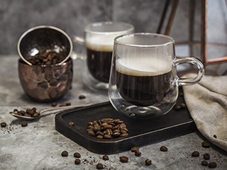
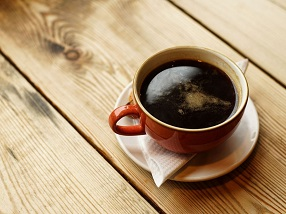
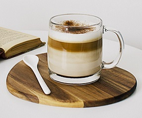

Coffee House
The Best Coffee for you
As third-wave coffee shops have become popular around Europe, their characteristics have become the new standard among trendy cafes. Customers who have acknowledged the existence of a flat white often mistake a mainstream, yet trendy cafe with the third-wave one. For these customers, speciality and third-wave cafes fall into the same category. However, there is more to speciality coffee shops. The experience is defined by their ability to bring together their overall concept.
Enjoy your coffee time!

Americano
Simple in construction, the Americano consists of just water and espresso. The ratio of these ingredients is typically either 1/2 and 1/2 or 1/3 espresso (1-2 shots) and 2/3 water.
Capuccino
A cappuccino is a coffee-based drink made primarily from espresso and milk. It consists of one-third espresso, one-third heated milk and one-third milk foam and is generally served in a 6 to 8-ounce cup.
Mocaccino
A coffee mocha also called mocaccino it's a hybrid between a mocha and a cappuccino, basically cappuccino that's made with chocolate powder or sauce.
